We are building a system that improves itself: a machine proposes changes to an editable application, a frozen benchmark scores them, cheap judgment decides what is worth evaluating, and humans keep every gate — a bounded, auditable recursion. Our starter domain is a document proofreader learning to hill-climb its own style-guide errors, one sandboxed experiment at a time. Every diagram answers exactly one question. The math hides behind Σ pills.
Before any framework: the manual loop. An engineer reads the system's output on a real input, keeps the good behavior, deletes the wrong one, notices the case the system never fires on, and then faces the actual work — figuring out why, changing one thing, and re-running everything to check that the fix didn't break something else.
That consequence is the whole problem. A behavior-tunable application is not one function; it is a pipeline of editable decisions — prompts, retrieval, chunking, routing, thresholds, code — and every edit is a trade across behaviors. Doing the loop by hand doesn't scale past the first regression. Doing it without a frozen ruler doesn't scale past the first temptation to game the metric instead of the task.
So the system this page describes does three things at once: it runs that loop automatically, it measures each candidate against a benchmark the machine may read but never write, and it keeps a human on every decision that costs money or ships code. Everything after this section is the machinery for making those three things true at the same time.
Most software improves at release-cycle speed: a human notices a failure, a human ships a fix, the next release is just as blind as the last one was. But applications whose behavior lives in editable configuration — prompts, retrieval, routing, thresholds, small code components — could improve continuously, because the fix and the system that applies it are both just text. What has been missing is not the editor. It is the loop: propose, measure, keep — running on its own, without drifting off the metric it claims to optimize.
The payoff compounds. Every generation starts where the last one stopped: the archive keeps every ancestor, so a run never re-pays for ground it already covered. Cheap attempts do the bulk of the exploring; rare, expensive jumps break plateaus. Improvement becomes a budgeted, schedulable activity instead of a heroic one — closer to compound interest than to crunch time.
The reason this recursion is deployable, rather than science fiction, is that it is bounded by design. Three constraints do all the safety work: the ruler is frozen (the machine scores against the benchmark forever and writes to it never); money is spent in order of conviction (cheap signals guide, only the frozen scorer decides); and humans hold four gates across every decision chain. A self-improving system that cannot edit its own exam, overspend its budget, or ship without approval is simply an optimizer with an audit trail.
Two papers make the loop practical, and they are this project's main foundations. SIFT shows how a pairwise judge plus a Bradley–Terry refit turns expensive model comparisons into a cheap, auditable ranking signal — the judgment this system leans on after every smoke test. LEVI shows how to evolve cheaply at all: short budgeted loops, a MAP-Elites archive that protects diversity, and small proxy suites that preserve ranking. Around those two, supporting ideas plug specific holes — reflective mutation in the GEPA style, bandit routing and novelty pressure in the Shinka style, sandboxed execution in the Darwin–Gödel lineage. The rest of this page is that machinery, kept deliberately generic; §14 shows how it lands on our starter domain, document proofreading.
Take any editable application as a pure function: inputs in, structured outputs out.
That contract never changes. What changes — the only things an evolution is allowed to touch — are
the decisions inside the pipeline. The figure shows our starter domain, document proofreading, where
the contract is run(doc_bytes) → spans[]; read each box as an instance of the general
pattern, and §14 for how the whole page maps onto it:
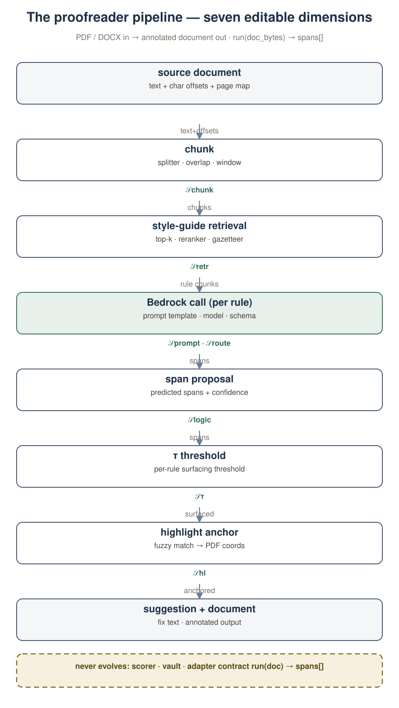
The pipeline, with what may change marked. Eight stages turn inputs into structured outputs, top to bottom — shown here in the starter domain, where documents become anchored spans. The seven 𝒮-chips — chunk, retrieval, prompt, routing, logic, highlight mapping, threshold — are this domain's search space; §14 maps them. The dashed band is the frozen floor.
Framed that way, improvement is a search problem with a hard budget. One equation states it; the rest of this page is the cost of making it honest:
Here c is the full editable configuration — code, prompts, retrieval, routing, thresholds — drawn from a frozen search space 𝒮. S is a single deterministic scoring function on the discovery split. Generalization is checked once, on a sequestered holdout, under a human gate. Evolution is open-ended within 𝒮 but closed with respect to 𝒟: labels never leak into prompts, logs, or commits.
1. The benchmark is frozen — evolution scores against it forever and writes to it never. 2. Every run and every promotion passes a human. 3. Cheap signals may guide the search; only the frozen scorer may decide.
A system that improves its score by gaming the metric instead of the task — suppressing highlights to inflate precision, loosening thresholds, or editing the grader. Every section below carries a guardrail against exactly this.
Real feedback is precious, sparse, and biased toward whatever a human happened to notice. The Context Lake — append-only, checksummed pulls — joins it with runtime traces and the style guide, and the diagnose module turns that join into ranked, evidence-backed issue cards. This is the first thing the system builds, because everything downstream consumes its output.
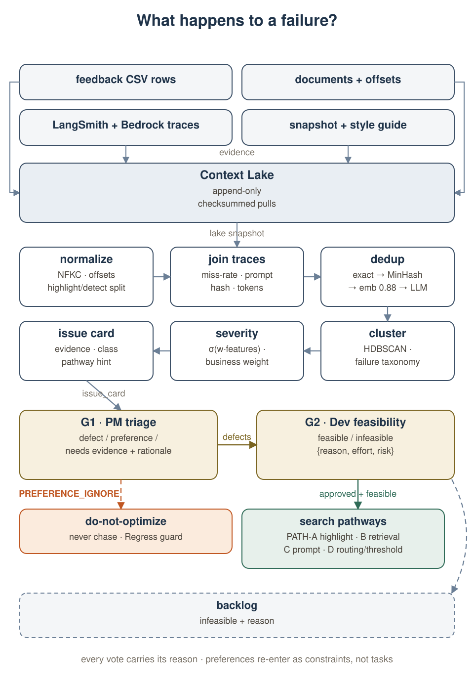
What happens to a failure? Six deterministic-ish steps turn raw rows into
issue_card objects; two human gates then sort them into search pathways, a
do-not-optimize constraint, or a backlog. The preference path leaves the frame on purpose — it is
a boundary, not a task.
Deduplication is three-layered on purpose: exact hash, then MinHash, then embeddings at 0.88 similarity with an LLM tiebreak — because the same failure arrives as forty CSV rows and should cost one issue card, not forty. Clustering is HDBSCAN against a failure taxonomy; severity is a weighted sigmoid over miss-rate, false-positive rate, highlight failures, coverage, and a per-rule business weight.
R_miss is the miss rate on that cluster's rules, FP_rate the false-positive rate, H_fail the highlight-anchor failure share, coverage how much of the rule's surface forms the cluster actually saw, and b_rule a business weight (critical behaviors outrank stylistic preferences). Severity ranks the backlog; it never enters S(c) — the scorer stays the judge.
An approved defect becomes one of four pathways — PATH-A output anchoring, PATH-B retrieval, PATH-C prompt, PATH-D routing or threshold — and the coding agent authors one candidate per pathway (§14 names them for the proofreader). But a candidate is only as good as the ruler it is graded by, and real user feedback alone cannot fill a benchmark dense enough to rank hundreds of candidates. So the benchmark is synthetic by construction.
Clean, compliant inputs get exactly one controlled violation each — injected by a frontier model that must return a diff, never a free-written document, because free writing produces stereotyped errors that flatter detectors. Every injection is then verified: deterministic oracles first (regexes, gazetteers, format checks — code, not prompts), then three independent rounds by a different model family, scored on a rubric. Anything short of unanimous ≥4/5 is rejected, not repaired. Distractors — clean but tricky — force the benchmark to measure precision, not just recall; minimal pairs isolate single-rule sensitivity; canaries (nonsense marks no model has seen) sit sealed in the holdout to catch memorization at promotion time.
Freeze in one motion. One controlled error per item → oracle + 3-round cross-family verification → hashed labels, sealed canaries, read-only mount. We budget a 20–40% rejection rate during verification — if rejections fall under 10%, the verifier is too lenient, and that is a bug.
Two equations do the real work: span identity (when is a predicted span the gold span?) and the composite score every candidate is ranked by. The score is deliberately multi-term — per-rule F1, highlight quality, suggestion acceptance, minus cost, latency, and a regression penalty — so that gaming any single term shows up as a loss somewhere else.
A predicted span counts as correct only if it overlaps the gold span by at least half of their union and names the same rule under an alias map. Verification is unanimous by design: any round ≤3 rejects the item and it is re-sampled, never re-prompted until it passes.
Per rule r with business weight w_r: precision, recall, F1 on spans; H_r highlight-anchor quality; A_r suggestion acceptance on judged samples. The penalties keep cost C, latency L, and guardrail regressions inside the objective instead of outside it. Weights (α, β, γ) and the penalty coefficients are part of the freeze — changing them invalidates every prior score.
Why so paranoid about the freeze? Because a benchmark with soft labels becomes a
hill-climbing target for noise. The evolution may score against the frozen benchmark forever; it may
never write to it, never read the holdout labels, and never finalize its own promotion
(§14 freezes it as bench_v7 for the proofreader).
Evaluating a candidate on the full discovery set is the expensive step, and most candidates do not deserve it. The ladder exists so that money is spent in order of conviction: free novelty and smoke checks kill duplicates and broken builds; a cheap pairwise judge ranks survivors; a small proxy suite supplies the ranking signal for ~80% of all evaluations; only finalists reach full discovery; only the run's best candidate reaches the sealed holdout, once.
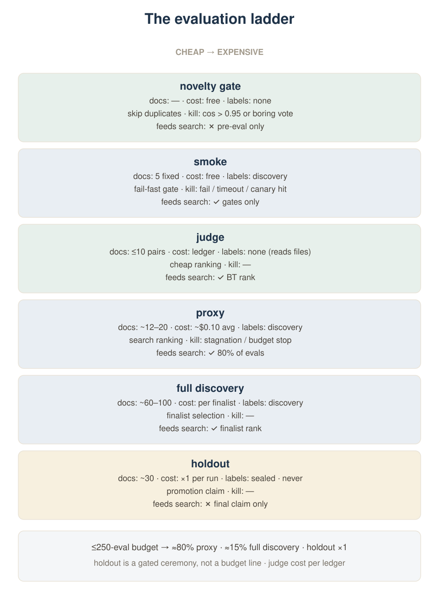
When is money spent, when is a candidate killed? Every stage names its kill condition and what it is allowed to expose. The judge's cost is whatever the ledger says — this page never assumes a per-call price.
The budget arithmetic is deliberately blunt: a $25 run cap against a 250-eval cap puts the
average proxy evaluation at about ten cents — a budget division, not a measured per-eval price
budget arithmetic. The LEVI baseline it is calibrated against reports
$4.50 for a 240-evaluation run paper-reported. Everything is memoized
on (code_hash, doc, scorer_ver), so a re-evaluation of an unchanged candidate on an
unchanged document is free — which is why the same candidate can appear in the proxy column a dozen
times without moving the dollar figure.
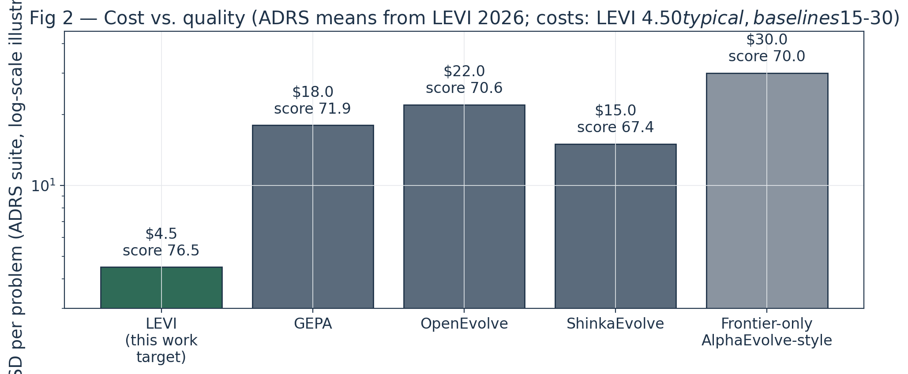
Cost vs. quality on the ADRS suite. Scores are paper-reported means from LEVI 2026; costs are LEVI's typical $4.50 and ballpark $15–30 for the baselines — comparative context, not measurements of this system paper-reported.
The proxy picks k ≈ 12–20 documents that discriminate between candidates — high cross-candidate score variance, low mutual redundancy — and ranks on their mean. What selection needs is the ordering, not the absolute score; the rank-preservation demo later on this page is synthetic, and the pilot must re-measure ρ on its own candidates before trusting the proxy for finalist selection.
A single best-so-far curve hides the thing worth protecting: diversity. The lineage
archive is a MAP-Elites-style container, following LEVI, over a CVT tessellation of the behavioral descriptor space —
each cell keeps its own champion, scored by the same frozen S(c). A candidate that is worse
globally but better on its cell's slice of behavior still earns an archive slot, a parent slot, and a
place in the UCB statistics.
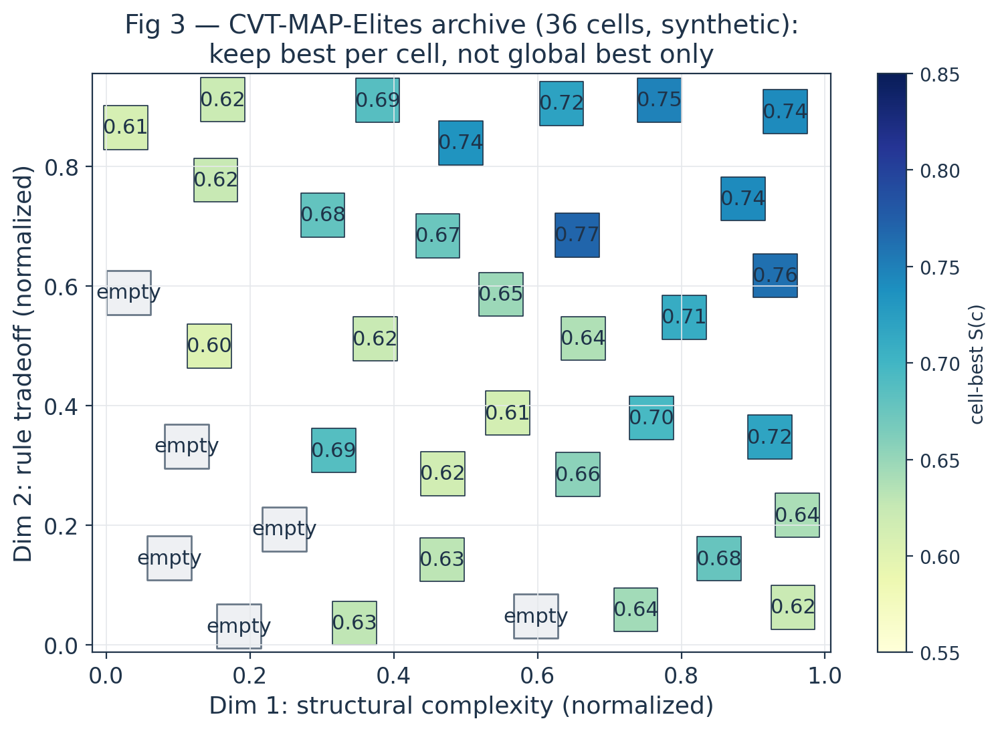
Keep best per cell, not global best only. 36 cells over two behavioral descriptors,
synthetic but structurally faithful — occupied cells carry their best score, empty cells are the
diversity reserve synthetic. The two dimensions here are complexity
and a rule tradeoff; the pilot's actual descriptors are recorded in model_plan.md, and §14 grounds them.
Every insert carries its full provenance: the diff, the parent ids, the behavioral descriptor, the score vector (not just the scalar), the evaluation cost, and the ledger entry. That record is what makes the next section's lineage question — where did this candidate come from? — a lookup instead of an archaeology project.
Parent selection is a softmax over the archive's rank signals — the judge's Bradley–Terry rating, the accuracy rank, and a novelty bonus that decays with how often a cell has already been sampled. Mutation routing is a bandit: cheap small models get ~90% of the attempts, frontier models get the rest and take over entirely when the run stagnates. Nothing here is free-form creativity; both decisions are parameterized, logged, and reproducible from the run seed.
r_BT is the rank under the judge's Bradley–Terry ratings (lower is better), r_acc the rank under proxy accuracy, v_i how often cell i has already been sampled. The negative signs make worse-rated, already-mined cells less likely; the novelty term keeps cold cells in play. Temperatures (α, β, η) are run parameters, recorded per run.
Each mutation model m carries a mean reward Q(m) (archive-insert rate weighted by score gain) and an exploration bonus. The novelty gate is two-stage: an embedding cosine check against every archived descriptor, and — only for near-duplicates — an LLM vote on whether the diff is interesting despite the similarity. Duplicates are rejected before any evaluation dollars are spent.
When the best-so-far score fails to improve by more than ε for 30 consecutive evaluations, the router stops pretending: it fires a paradigm shift — the frontier model, given k diverse cells and explicit permission to break the current approach — and records the shift as a first-class event in the run's timeline. Stagnation is data, not a bug.
The search space 𝒮 is the direct sum of the seven pipeline dimensions, each with its own representation, its own mutation operators, and its own guardrails. "Open-ended" does not mean arbitrary code; it means the space is large enough that exhaustive search is impossible and structured enough that every point in it can be built, sandboxed, and scored by the same contract.
Prompt templates; retrieval configuration (top-k, reranker, gazetteer contents); chunking (splitter, overlap, window); routing (model choice per rule class); deterministic logic (regexes, parsers — the most consequential and most dangerous dimension); highlight anchoring (fuzzy-match strategy); and per-rule thresholds τ. The adapter contract run(doc) → spans[] bounds all seven: any point in 𝒮 must compile to something the sandbox can execute.
Seeding matters more than the search. A cold archive with one seed cell produces candidates that all resemble the seed; an archive seeded from the current production configuration plus a handful of deliberately diverse rule-tradeoff points gives the bandit something to explore against. The seeds are hand-authored, reviewed at G3, and versioned with the run — §14 lists the proofreader's exact seven dimensions and seeds.
Everything so far has been about proposing and ranking. This section is about the one component the proposal machinery is structurally forbidden to touch. The vault lives in a separate account, is mounted read-only into the sandbox, and exposes exactly two verbs to the search: a scoring endpoint it may call as often as the budget allows, and a finalization endpoint that requires a human on the line.
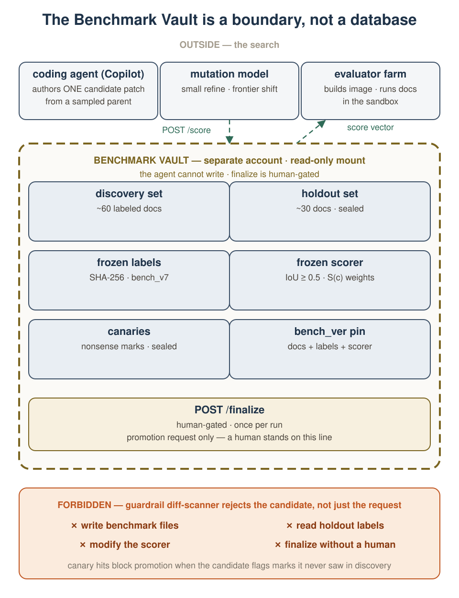
What the agent can never do. The allowed verbs are scoring and a human-gated finalize. The forbidden band is enforced twice: at the API, and by a guardrail diff-scanner that rejects the candidate if its diff touches the vault, the benchmark, or the scorer — a request filter alone would not stop a patch that rewrites its own grader.
The canaries deserve their own sentence. Each holdout item may carry a nonsense mark — a trademark-shaped token no model has ever seen, planted only in the sealed set. A candidate that begins flagging canaries it could not have read in discovery has memorized something it should not have, and is blocked at promotion regardless of its score. This is the memorization check, and it fires exactly once per run, at the moment that matters.
The question every evolution system should be able to answer on demand: what chain of edits produced this candidate, what did each link cost, and does the final number survive the jump from the proxy to the full set to the sealed holdout? The archive answers all three from the same record.
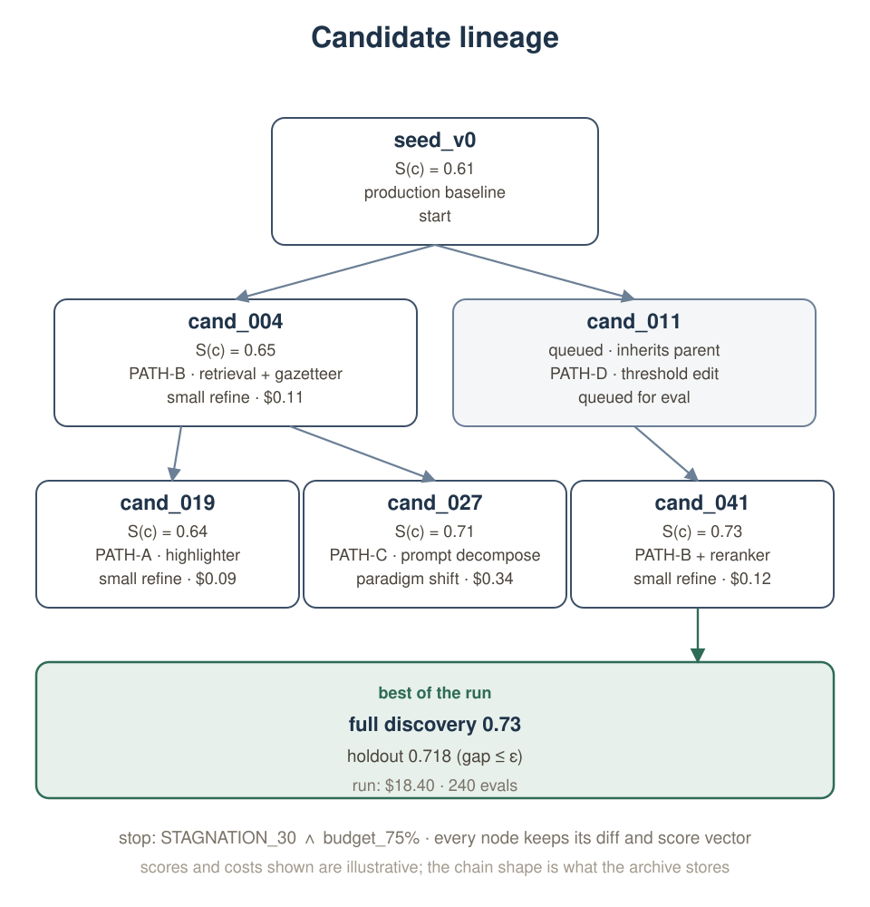
One run's ancestry. Scores and costs here are illustrative — shaped to the archive schema, not pilot output illustrative — but the chain shape is exactly what the archive stores: every node keeps its diff, parent ids, descriptor, score vector, and ledger entry. Note cand_011, still queued: lineage does not require completion.
The proxy's job in this story is narrow and worth stating precisely: it must preserve the ranking of candidates well enough that the finalists handed to full discovery are the right finalists. Exact proxy scores are not required; rank correlation is. The demo below makes the point on synthetic data — the pilot must measure its own ρ before trusting the proxy with finalist selection.
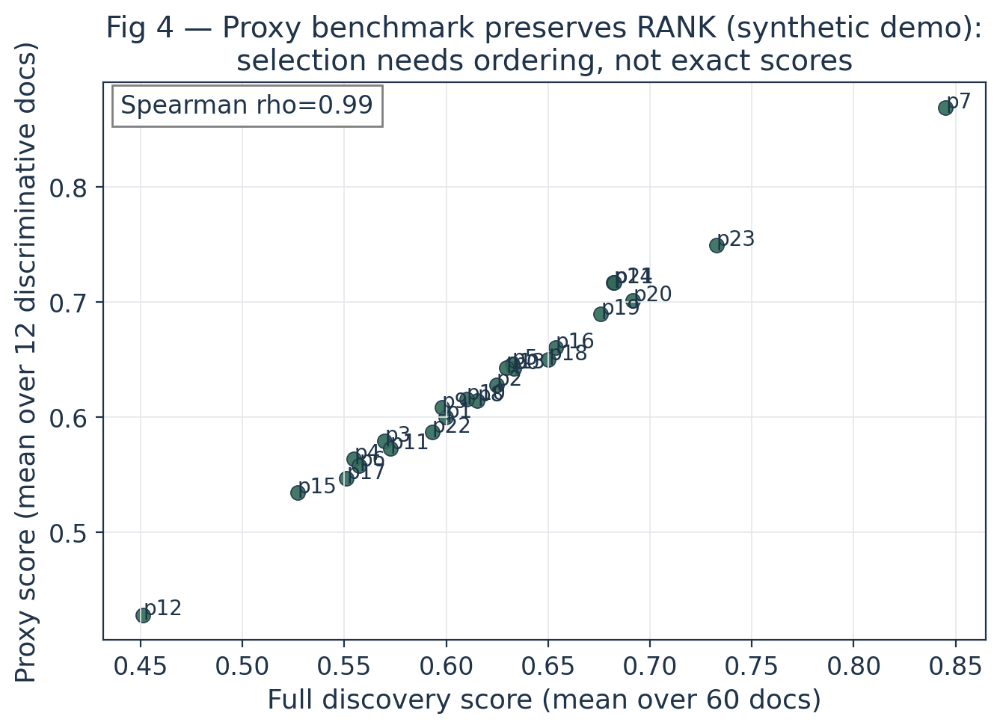
Proxy preserves rank (synthetic demo). 24 candidates, 60 documents, 12-document proxy, Spearman ρ ≈ 0.99 — a structural illustration of what rank preservation looks like, not a measurement synthetic.
And the last number a run reports is the one that keeps everyone honest: the gap between the discovery score and the holdout score of the promoted candidate. If that gap exceeds ε, the run's "best" was overfit to discovery, and the promotion decision at G4 has to weigh exactly that.
The machine proposes at every stage. At four points a person can stop it, and at each of those points the system has already prepared the material a decision requires: the evidence for G1, the feasibility record for G2, the pathways and budget for G3, the full and holdout scores plus the canary result for G4.
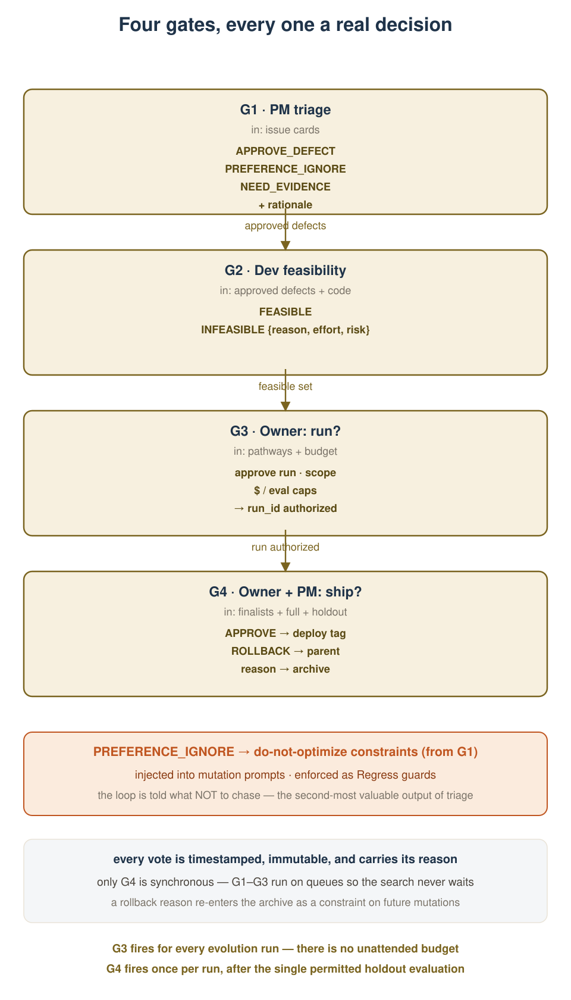
Who can say no, and what happens when they do. Only G4 is synchronous — G1 through G3 run on queues so the search never idles waiting for a human. A rollback reason re-enters the archive as a constraint on future mutations: "no" is data too.
The second-most-valuable output of triage is not the approved defect; it is the PREFERENCE_IGNORE vote — the explicit list of things the loop must not chase. Those preferences are injected into every mutation prompt and enforced as Regress guards at scoring time, so a candidate that "improves" the score by breaking a preference is killed by the scorer, not by hope.
The Regress term inside S(c) punishes any drop on the guardrail rules relative to the base configuration — this is what turns a PREFERENCE_IGNORE vote into an automatic kill. The holdout gap is checked exactly once, at /finalize, and the stop condition is a disjunction the orchestrator evaluates every evaluation: money, count, wall-clock, stagnation, or a human pulling the plug.
Everything above is now a component. This section runs the loop once, in order, and then zooms out to the ten-component platform that hosts it. Read the loop figure as one evolution run; read the platform figure as everything that has to exist for that run to be possible at all.
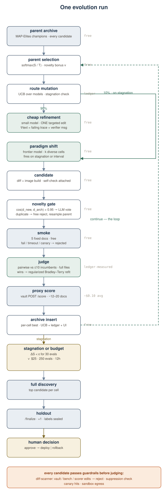
How one evolution run works. The run flows top to bottom; the continue loop-back returns on the right; stagnation exits below; guardrails along the bottom. Costs sit beside each stage — ledger labels, not assumed prices.
One component deserves prose rather than a caption, because it is the piece most easily mistaken for a rubber stamp: the judge. After smoke, each surviving candidate is compared pairwise against up to ten incumbents — the judge reads the full candidate files, not a summary — and wins feed a regularized Bradley–Terry refit that updates the ratings used by parent selection. Following SIFT, the build guide reports ρ ≈ 0.68 agreement with human pairwise votes for this judge, against 0.40 for the baseline that grades a single answer in isolation build-guide reported. The point is not that the judge is right; it is that it is measurably less wrong than the alternative, and its errors are auditable from the pairwise records.
Each pairwise win y between candidates i and j contributes a Bradley–Terry likelihood term; the L2 penalty on log-ratings regularizes sparsely-compared candidates toward the pack. Ratings θ are refit after every judge batch and consumed by the parent-selection softmax. The judge is a model, its votes are logged, and a sample of them is auditable against human judgments — that audit is a build task, not a hope.
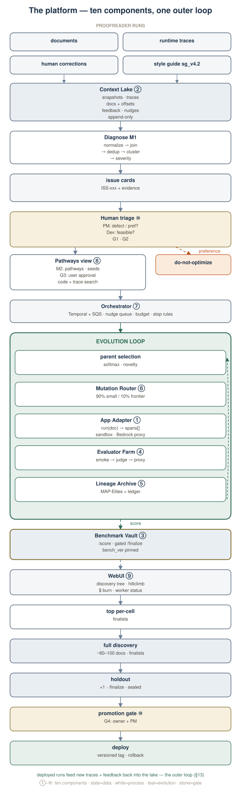
Ten components, one outer loop. Numbered ①–⑩ per the research draft's component list. The bottom band is what happens after the loop stops; deployed runs feed new traces and corrections back into the lake — the outer loop of §15.
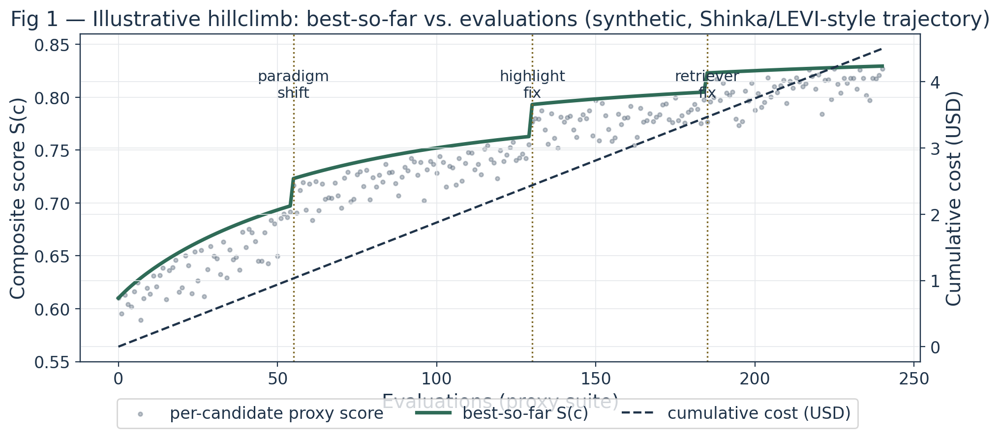
What a run looks like when it works. Best-so-far score against evaluations, with a cost burn-down on the right axis — a synthetic trajectory in the shape of Shinka/LEVI-style runs, not pilot output synthetic. The three jumps are the illustrative paradigm shift and the two fixes from §14's worked example.
Everything above was the generic machine. Here is its first instantiation: a
document proofreader whose contract is run(doc_bytes) → spans[] — a span is a character
range plus a rule id plus a suggestion — checked against style guide sg_v4.2. This is
the starter domain, not the destination: every mechanism below is one the generic loop already
describes.
3.3.2024 — sails through. The datetime rule's gazetteer chunk
expects March 3, 2024 or ISO 2024-03-03. The human fix: add a dotted-date
pattern to the retrieval chunk. The consequence nobody predicts: version strings like
v1.2.3 now trip the same rule, and a different rule starts firing on page numbers.
This episode — and every candidate id, score, and dollar figure in the lineage diagrams above —
is illustrative, shaped to the archive's schema, not measured pilot output.
The mapping, component by component. The pipeline is eight stages: source document, chunking, style-guide retrieval, a Bedrock call per rule, span proposal, threshold, highlight anchoring, and the annotated document. The search space is those seven editable dimensions — 𝒮chunk, 𝒮retr, 𝒮prompt, 𝒮route, 𝒮logic, 𝒮hl, 𝒮τ — and the four pathways are concrete: PATH-A fixes the highlighter, PATH-B the retrieval (top-k, reranker, gazetteer), PATH-C the prompt, PATH-D the routing and thresholds.
The benchmark freezes as bench_v7: ~60 discovery documents
plus ~30 sealed holdout documents, one injected violation per item, verified by deterministic oracles
(datetime regexes, trademark gazetteers, unit-spacing checks) and three unanimous cross-family rounds,
with distractors, minimal pairs, and sealed canaries. The ladder runs on 5 fixed
smoke documents under a $25 / 250-eval budget — about ten cents per proxy evaluation by budget
arithmetic. None of these numbers are the point; they are one domain's settings for a loop that
works the same anywhere.
There are two loops, and conflating them is how self-improving systems get oversold. The inner loop is one evolution run: sample, mutate, judge, archive, repeat until the stop condition. The outer loop is the lifecycle: a promoted candidate ships, its output generates new traces and human corrections, those land in the Context Lake, the diagnose module turns them into next quarter's issue cards, and a new run begins with a warmer archive than the last one.
The recursion is real, and it is also bounded — by design, not by hope. Three things never
enter the loop's writing set: the vault and its labels, the scorer and its weights, and the seven
dimensions' boundary itself (𝒮 only changes when a human revises model_plan.md and re-runs
G3). A system that could edit its own ruler would eventually do so; this one cannot, which is the
entire reason the outer loop can be allowed to run at all.
The lifecycle's last act is the one most often skipped: every run — promoted or rolled back — writes a report. The stop reason, the budget actually burned, the finalists and their discovery–holdout gaps, the guardrail events, the judge's audit sample. A rolled-back run that never wrote down why will be re-run, expensively, by whoever comes next. The archive makes that unnecessary — if the report exists.
Benchmark Vault (bench_v7 + holdout + canaries), the scorer and its weights, the vault API, the guardrails, the sandbox contract. Evolution scores against these forever.
Prompts, retrieval, chunking, routing, deterministic logic, highlight mapping, thresholds — the seven dimensions of 𝒮, authored by the coding agent from sampled parents.
PM triage (defect vs preference), Dev feasibility, run approval with pathways and budget, and the single promote/rollback decision after the one permitted holdout evaluation.
Next: BUILD_GUIDE.md —
the same machinery as build tickets with per-phase verification gates, model wiring, and the exact schemas
each module must emit. This page is the map; that document is the marching order.